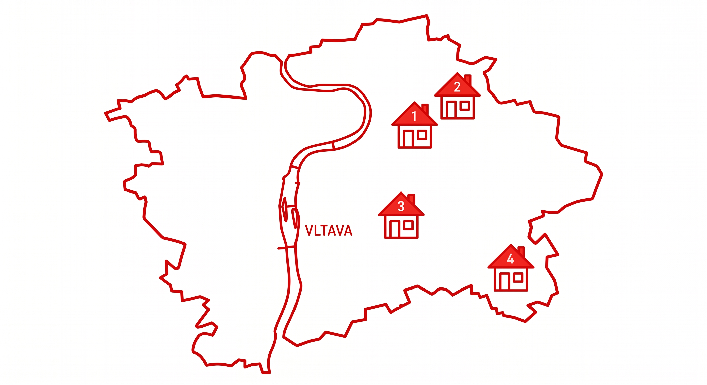

Etika
Morální integrita v rozhodování a budování respektu v kolektivu i u studentů.
Moderní vzdělávací platforma
Máš pocit, že s dětmi by se Ti pracovalo lépe než s kolegy?
Chceš aby Ti ostatní naslouchali?
Chceš jít v životě příkladem?

Partneři

Kariéra
Učitelství není jen povolání, je to životní mise. Věříme, že každý z nás má potenciál inspirovat. Hledáme odvážné jedince, kteří chtějí přenést své profesní zkušenosti do školních lavic a formovat budoucnost.
Chci se stát učitelemStrukturovaný mentoring a metodická podpora pro každého kandidáta.
Samostudium
Morální integrita v rozhodování a budování respektu v kolektivu i u studentů.
Schopnost analyzovat informace a učit studenty rozlišovat fakta od názorů.
Efektivní využití moderních technologií pro zefektivnění výuky a zpětné vazby.
Preview knihy
Komplexní kodex sebekázně a profesní etiky pedagoga, který je základem pro úspěšnou kariéru v učitelství. Tento kodex poskytuje jasné směrnice pro chování, komunikaci a rozhodování v různých situacích, které mohou nastat v průběhu učitelské praxe. Je navržen tak, aby pomáhal učitelům rozvíjet profesionální integritu, budovat důvěru s kolegy, studenty a rodiči, a zároveň podporoval osobní růst a sebereflexi.
Ukázková lekce
Cíl
Otázky pro třídu (v roli):
Chceš vymyslet, jak by mohla lekce pokračovat? Napiš nám svůj návrh a začni učit ještě dnes!